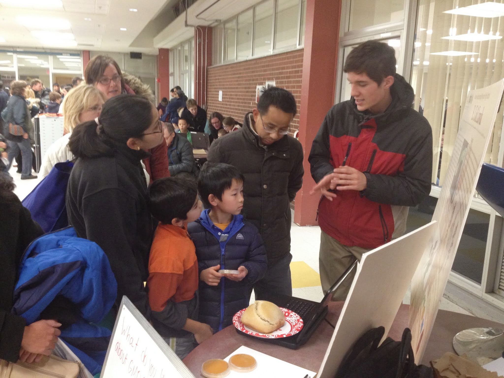
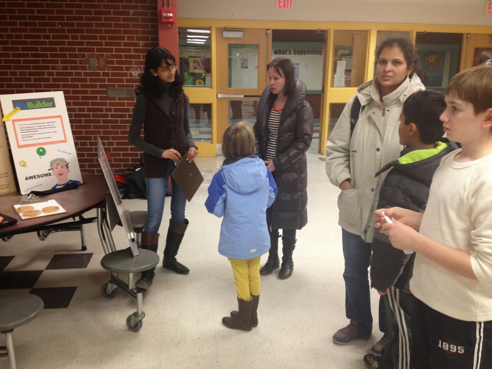

Outreach
Science Family Night is a local event at Acton-Boxborough Regional High School. High school clubs and organizations meet each year to hold events promoting sciences and technology. Members of the clubs conduct science experiments and build devices to carry out specific purposes. Children of all ages and their families come to this event to learn and appreciate science and technology.
This year, our BioBuilder team participated in Science Family Night. We taught the kids the true meaning behind the phrase genetically modified organisms and the process of modifying the DNA of living organisms. To do this efficiently, we created a physical example: genetically modified beta-keratin (aka vitamin b) rich yeast or vita yeast. We, then, took our homemade GMO and baked it into bread. After our lesson on GMOs, we then asked the kids whether or not they would feel comfortable eating the bread. Much to our surprise, the vote was almost even, with the "no" side winning by one vote. When we asked why, many students said that they didn't like the idea of eating food that has been genetically engineered. These responses made us determined to destroy misconceptions regarding synthetic biology.


We also explained our project from last year, which involved recreating Kopi Luwak coffee beans usually inhumanly made in the stomach of the civet cat. We attempted to create E. coli that could mimic the environment of a civet cat's stomach. By creating bacteria that can do that, we could make Kopi Luwak coffee beans without the need of civet cats. This method would humane still make the very same beans. It also turns out that enzymes of a civet cat's stomach can denature the proteins in coffee beans so that it will be less bitter and taste better overall than the original beans. We wanted to make a more humane way of producing Kopi Luwak coffee which the most expensive coffee in the world. You can learn more about our project and our process last year here.